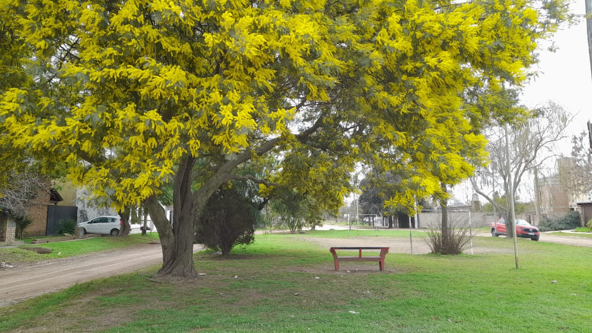
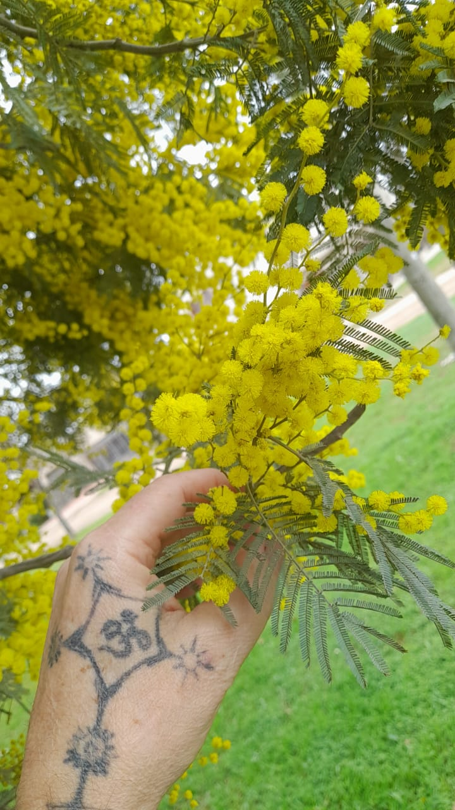

Bajo la calidez de nuestras sierras, este es un espacio seguro para soltar cargas, respirar profundo y ser escuchado. Sentite cómodo, estás en casa.
Escríbeme, aquí te escucho
Este espacio nace del respeto por los procesos de cada uno y la necesidad de encontrar un oído atento en medio del ruido diario. Aquí no hay juicios.
"Ser amable es más importante que tener razón. A veces, lo que la gente necesita no es una mente brillante que hable, sino un corazón especial que escuche."
<